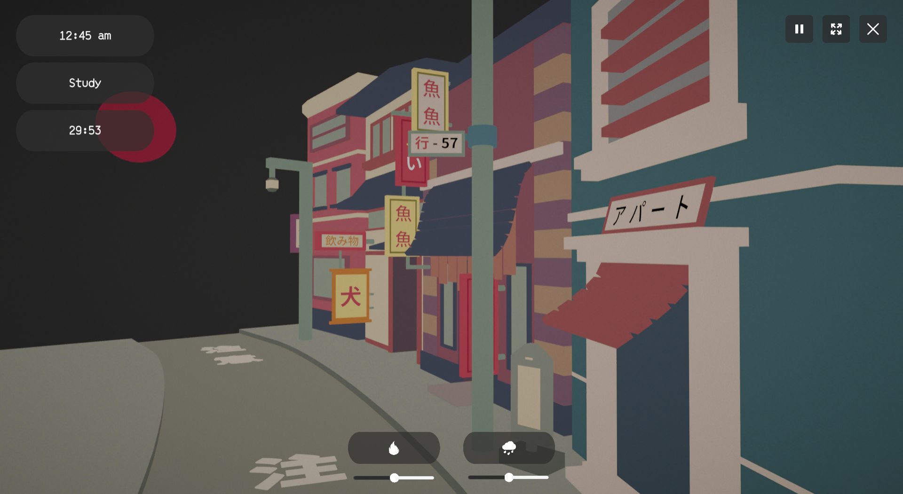
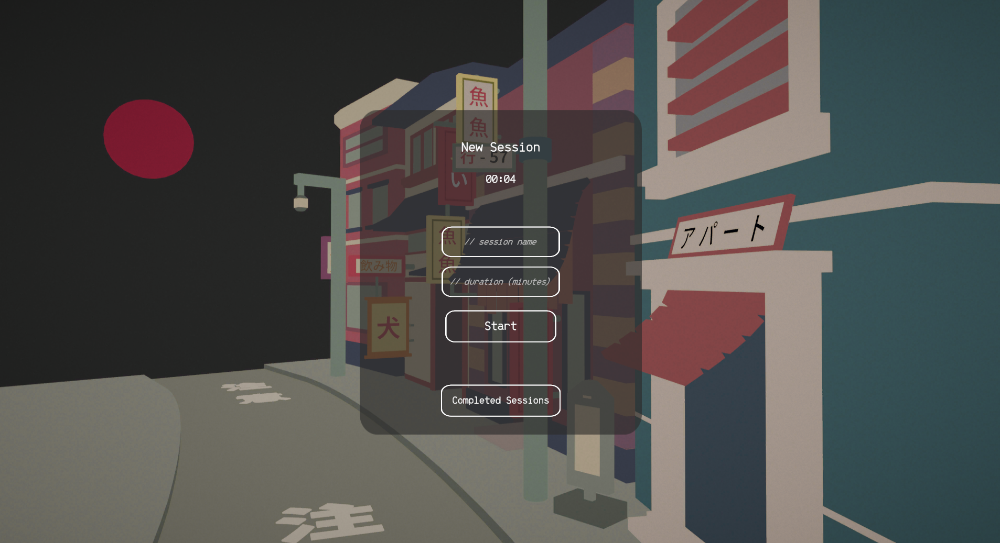
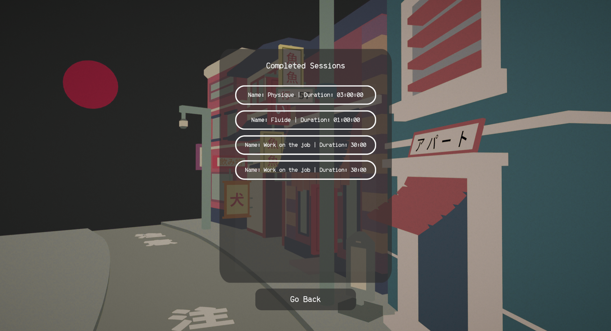

Tasker
Project Description
I was having trouble focusing on my studying. So I coded this simple app! It asks you for a task, and it's duration. And tracks how many tasks you completed! You can even listen to some relaxing rain or fireplace ambient white noise while doing your task.
Screenshots


